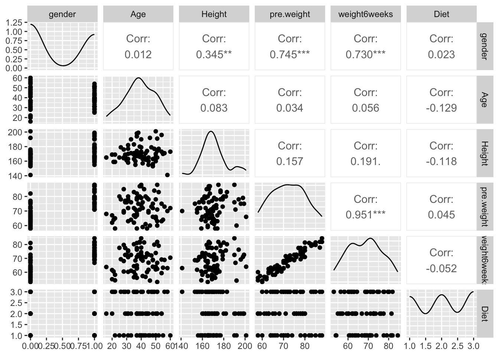

# load the data here
data <- read.csv("~/Desktop/ENVS 543/ENVS543/dietdata.csv")
library(ggplot2)
library(GGally)
library(tidyverse)Analysis of Variance
In Class Activity
Abstract
This analysis examines the effects of diet and gender on weight loss using ANOVA models. Diet significantly impacts weight loss, with Diet 3 producing the greatest results. Gender alone has no meaningful effect, but males on Diet 3 show significantly higher weight loss. The interaction model explains 20% of the variation, confirming diet as the strongest predictor of weight loss.
Introduction
This analysis investigates the effects of diet and gender on weight loss over six weeks using data from 76 participants. The dataset includes demographic information (age, height, and gender), initial and post-diet weights, and one of three diet plans. Through exploratory data analysis and statistical modeling, we aim to determine whether diet significantly affects weight loss, whether gender plays a role, and if there is an interaction between diet and gender that impacts results. Using one-way and two-way ANOVA models, along with post-hoc tests, this study identifies key patterns and explains how much of the variability in weight loss is attributable to these factors. There are 76 observations of individuals with the following characteristics:
- Gender (0/1)
- Age (earth years. 🤓)
- Height (cm)
- Pre.weight & weight6weeks (kg)
- Diet (1,2,3)
The data are located as a CSV file named DietData.csv linked from the Canvas page. Load the data in and format things so they look correctly to you.
Exploratory Data Analysis
One of the first things to do is to look at the data and see if there are any obvious things. Go ahead and explore these data visually. What do you see?
# Data visualization
str(data)'data.frame': 76 obs. of 7 variables:
$ Person : int 1 2 3 4 5 6 7 8 9 10 ...
$ gender : int 0 0 0 0 0 0 0 0 0 0 ...
$ Age : int 22 46 55 33 50 50 37 28 28 45 ...
$ Height : int 159 192 170 171 170 201 174 176 165 165 ...
$ pre.weight : int 58 60 64 64 65 66 67 69 70 70 ...
$ Diet : int 1 1 1 1 1 1 1 1 1 1 ...
$ weight6weeks: num 54.2 54 63.3 61.1 62.2 64 65 60.5 68.1 66.9 ...summary(data) Person gender Age Height
Min. : 1.00 Min. :0.0000 Min. :16.00 Min. :141.0
1st Qu.:19.75 1st Qu.:0.0000 1st Qu.:32.50 1st Qu.:163.8
Median :40.50 Median :0.0000 Median :39.00 Median :169.0
Mean :39.87 Mean :0.4342 Mean :39.22 Mean :170.8
3rd Qu.:59.25 3rd Qu.:1.0000 3rd Qu.:47.25 3rd Qu.:175.2
Max. :78.00 Max. :1.0000 Max. :60.00 Max. :201.0
pre.weight Diet weight6weeks
Min. :58.00 Min. :1.000 Min. :53.00
1st Qu.:66.00 1st Qu.:1.000 1st Qu.:61.95
Median :72.00 Median :2.000 Median :68.95
Mean :72.29 Mean :2.039 Mean :68.34
3rd Qu.:78.00 3rd Qu.:3.000 3rd Qu.:73.67
Max. :88.00 Max. :3.000 Max. :84.50 # Check for missing values
sum(is.na(data))[1] 0data %>%
select(gender, Age, Height, pre.weight, weight6weeks, Diet) -> pair_comp
ggpairs(pair_comp)
Key Insights from Output:
Age: The participants’ ages range from 16 to 60, with a median age of 39, representing a middle-aged group overall.
Height: Heights range from 141 cm to 201 cm, with an average height of about 171 cm, showing a wide variation in stature.
Pre.weight and Weight Change:
Pre-experiment weights range from 58 kg to 88 kg, with a mean of 72.3 kg.
Post-experiment weights (6 weeks later) are slightly lower on average (mean = 68.3 kg), suggesting a potential weight loss trend.
Diet Groups: Participants are evenly distributed across the three diet types (mean ~ 2.0), allowing for fair comparisons between groups.
Gender: Around 43% of participants are coded as
1, suggesting a near-balanced gender distribution.
Estimating Mean Values
Make a table of Weight Loss by gender and diet.
# Table output
data %>%
select(gender, Age, pre.weight, Diet, weight6weeks) -> weight_loss
weight_loss %>%
mutate(loss = pre.weight - weight6weeks) -> weight_loss
summary_table <- weight_loss %>%
group_by(gender, Diet) %>%
summarize(mean_loss = mean(loss, na.rm = TRUE)) %>%
ungroup()
knitr::kable(summary_table, caption = "Mean Weight Loss by Gender and Diet")| gender | Diet | mean_loss |
|---|---|---|
| 0 | 1 | 3.050000 |
| 0 | 2 | 2.607143 |
| 0 | 3 | 5.880000 |
| 1 | 1 | 3.650000 |
| 1 | 2 | 4.109091 |
| 1 | 3 | 4.233333 |
Key Insights:
Gender Differences:
Gender
0(e.g., Male) and Gender1(e.g., Female) show varying weight loss trends across diets, with females generally losing more weight on average in most diets.- Example: Diet 2 (Male: 2.61 kg vs. Female: 4.11 kg).
Most Effective Diets:
Gender
0: Diet 3 has the highest mean weight loss (5.88 kg).Gender
1: Diet 3 also shows strong results (4.23 kg), but Diet 2 is close (4.11 kg).
Least Effective Diets:
Gender
0: Diet 2 results in the lowest mean weight loss (2.61 kg).Gender
1: Diet 1 has the lowest mean weight loss (3.65 kg).
1-Way Analysis of Variance
Diet Issues:
The underlying linear model.
\[ y_{ij} = \mu + \tau_{Diet, i} + \epsilon_j \]
Test the null hypothesis, \(H_O:\) There is no effect of diet on weight loss (e.g., \(\tau_{Diet-1} = \tau_{Diet-2} = \tau_{Diet-3} = 0.0\)). Is there evidence for one diet producing more weight loss than the others? Create an aov analysis and assign it to the variable fit.diet and examine its contents.
# Define model
fit.diet <- aov(loss ~ factor(Diet), data = weight_loss)
fit.dietCall:
aov(formula = loss ~ factor(Diet), data = weight_loss)
Terms:
factor(Diet) Residuals
Sum of Squares 60.5270 410.4018
Deg. of Freedom 2 73
Residual standard error: 2.371064
Estimated effects may be unbalancedanova(fit.diet)Analysis of Variance Table
Response: loss
Df Sum Sq Mean Sq F value Pr(>F)
factor(Diet) 2 60.53 30.2635 5.3831 0.006596 **
Residuals 73 410.40 5.6219
---
Signif. codes: 0 '***' 0.001 '**' 0.01 '*' 0.05 '.' 0.1 ' ' 1ANOVA Results:
Evidence Against the Null Hypothesis:
The p-value for the
factor(Diet)term is 0.0066, which is smaller than the significance threshold of 0.05.This provides strong evidence to reject H0H_0H0. Hence, there is a statistically significant difference in weight loss among the diet groups.
Variance Partitioning:
- The Sum of Squares for
factor(Diet)is 60.53, while the residual variance is larger (410.40). This indicates that while diet contributes to differences in weight loss, individual variability or other factors explain a larger portion of the variation.
- The Sum of Squares for
F-Statistic:
- The F-value of 5.38 quantifies the ratio of diet-related variance to unexplained variance. The high value further supports the significance of diet as a factor.
Residual Standard Error:
- The residual standard error of 2.37 indicates the average deviation of observed weight loss values from the model predictions.
Are they all significantly different? Try the TukeyHSD() Interpret the results.
# Posthoc test
tuk <- TukeyHSD(fit.diet)
tuk Tukey multiple comparisons of means
95% family-wise confidence level
Fit: aov(formula = loss ~ factor(Diet), data = weight_loss)
$`factor(Diet)`
diff lwr upr p adj
2-1 -0.032000 -1.6530850 1.589085 0.9987711
3-1 1.848148 0.2567422 3.439554 0.0188047
3-2 1.880148 0.3056826 3.454614 0.0152020Post-hoc Summary:
Comparison 2 vs. 1:
Difference: -0.032
Confidence Interval: [-1.653, 1.589]
Adjusted p-value: 0.999
Conclusion: No significant difference in weight loss between Diet 2 and Diet 1.
Comparison 3 vs. 1:
Difference: 1.848
Confidence Interval: [0.257, 3.440]
Adjusted p-value: 0.019
Conclusion: Diet 3 results in significantly greater weight loss compared to Diet 1.
Comparison 3 vs. 2:
Difference: 1.880
Confidence Interval: [0.306, 3.455]
Adjusted p-value: 0.015
Conclusion: Diet 3 also results in significantly greater weight loss compared to Diet 2.
Key Takeaway:
- Diet 3 shows significantly higher weight loss than both Diet 1 and Diet 2, while Diets 1 and 2 do not differ significantly from each other.
How much of the variation is explained? If you notice when you do a summary from a lm() (regression) model, it gives you the \(R^2\) values directly (remember \(R^2 = \frac{SS_{model}}{SS_{Error}}\)). Does summary() of your aov model give you that?
# How much variance?
lm(formula = weight_loss$loss ~ weight_loss$Diet, data = weight_loss) -> diet_lm
summary(diet_lm)
Call:
lm(formula = weight_loss$loss ~ weight_loss$Diet, data = weight_loss)
Residuals:
Min 1Q Median 3Q Max
-6.0088 -1.4769 0.1412 1.5018 6.0338
Coefficients:
Estimate Std. Error t value Pr(>|t|)
(Intercept) 2.0236 0.7389 2.739 0.00772 **
weight_loss$Diet 0.9426 0.3363 2.803 0.00645 **
---
Signif. codes: 0 '***' 0.001 '**' 0.01 '*' 0.05 '.' 0.1 ' ' 1
Residual standard error: 2.399 on 74 degrees of freedom
Multiple R-squared: 0.096, Adjusted R-squared: 0.08378
F-statistic: 7.858 on 1 and 74 DF, p-value: 0.006455Summary:
Diet is a significant predictor of weight loss, with each diet level contributing approximately 0.943 kg additional weight loss.
The model explains a small but statistically significant portion of the variability in weight loss (R^2 %).
Residuals indicate variability not captured by the model, suggesting other factors may also play a role.
Since I asked the question, the answer is probably no. Why does it not do this? Probably for historical reasons, which are a bit of a pain in the backside. That being said, there are some tidy ways to fix this issue. I’m going to use the broom package which allows us to clean up (or tidy if you will) the model objects. This will take the model object and pull out all the ANOVA table stuff and put it into a tibble.
library( broom )
# use your model fit next (I called mine fit.diet)
tidy_diet <- tidy( fit.diet )
tidy_diet# A tibble: 2 × 6
term df sumsq meansq statistic p.value
<chr> <dbl> <dbl> <dbl> <dbl> <dbl>
1 factor(Diet) 2 60.5 30.3 5.38 0.00660
2 Residuals 73 410. 5.62 NA NA Now, since it is all easily accessible, we can calculate the \(R^2\) from the new model output.
# Estimate the variance explained from the raw sums of squares
r2_Diet <- tidy_diet$sumsq[1] / sum( tidy_diet$sumsq )
r2_Diet [1] 0.1285269Key Insights:
Variance Explained:
- The
Dietfactor explains about 12.85% of the total variation in weight loss among participants.
- The
Significance:
- While statistically significant (from ANOVA results, p=0.0066), the R^2 value is relatively low, indicating that
Dietalone is not a strong predictor of weight loss.
- While statistically significant (from ANOVA results, p=0.0066), the R^2 value is relatively low, indicating that
Unexplained Variance:
- The remaining 87.15% of the variation in weight loss is attributed to other factors (e.g., individual differences, measurement error) or residual variance not explained by the model.
Gender:
The underlying linear model.
\(y_{ij} = \mu + \tau_{gender, i} + \epsilon_j\)
Independent of the diet, test the null hypothesis \(H_O:\) There is no difference in weight loss between genders (e.g., $*{gender-0} =* = 0.0 $). Is there evidence for one gender being significantly different than another? How much of the variation is explained (another \(R^2\) by gender)?
gender_wtLoss <- weight_loss %>% select(gender, Diet, loss) %>%
mutate(gender = as.factor(gender))
fit.gender <- aov(weight_loss$loss ~ weight_loss$gender, data = weight_loss)
summary(fit.gender) Df Sum Sq Mean Sq F value Pr(>F)
weight_loss$gender 1 0.3 0.278 0.044 0.835
Residuals 74 470.7 6.360 tidy_gender <- tidy(fit.gender)
lm(formula = weight_loss$loss ~ weight_loss$gender, data = weight_loss) -> gender.lm
summary(gender.lm)
Call:
lm(formula = weight_loss$loss ~ weight_loss$gender, data = weight_loss)
Residuals:
Min 1Q Median 3Q Max
-5.9930 -1.6846 -0.2041 1.7264 5.1848
Coefficients:
Estimate Std. Error t value Pr(>|t|)
(Intercept) 3.8930 0.3846 10.123 1.3e-15 ***
weight_loss$gender 0.1221 0.5836 0.209 0.835
---
Signif. codes: 0 '***' 0.001 '**' 0.01 '*' 0.05 '.' 0.1 ' ' 1
Residual standard error: 2.522 on 74 degrees of freedom
Multiple R-squared: 0.0005914, Adjusted R-squared: -0.01291
F-statistic: 0.04379 on 1 and 74 DF, p-value: 0.8348Gender Differences in Weight Loss
Gender Effect:
- The difference in weight loss between genders is 0.122 kg, with a p=0.835. This is not statistically significant.
Model Fit:
R^2 = 0.00059: Gender explains 0.059% of the variation in weight loss, which is negligible.
Residual standard error: 2.522, indicating substantial unexplained variability.
Conclusion:
- There is no evidence that gender has a meaningful impact on weight loss. Other factors likely drive the observed variation.
Do genders respond differently to diets?
\(y_{ijk} = \mu + \tau_{Diet,i} + \tau_{gender,j} + \epsilon_k\)
So here we do something a bit different. We want to simultaneously ask the following questions:
- Do diets influence weight loss?
- Do genders influence weight loss?
- Is there an interaction where different genders respond differently to different diets?
In \(R\), this is done as:
# diet model
fit.dietCall:
aov(formula = loss ~ factor(Diet), data = weight_loss)
Terms:
factor(Diet) Residuals
Sum of Squares 60.5270 410.4018
Deg. of Freedom 2 73
Residual standard error: 2.371064
Estimated effects may be unbalancedtidy_diet# A tibble: 2 × 6
term df sumsq meansq statistic p.value
<chr> <dbl> <dbl> <dbl> <dbl> <dbl>
1 factor(Diet) 2 60.5 30.3 5.38 0.00660
2 Residuals 73 410. 5.62 NA NA # gender model
fit.genderCall:
aov(formula = weight_loss$loss ~ weight_loss$gender, data = weight_loss)
Terms:
weight_loss$gender Residuals
Sum of Squares 0.2785 470.6503
Deg. of Freedom 1 74
Residual standard error: 2.521932
Estimated effects may be unbalancedtidy_gender# A tibble: 2 × 6
term df sumsq meansq statistic p.value
<chr> <dbl> <dbl> <dbl> <dbl> <dbl>
1 weight_loss$gender 1 0.278 0.278 0.0438 0.835
2 Residuals 74 471. 6.36 NA NA # interaction model
weight_loss$interaction <- interaction(weight_loss$gender, weight_loss$Diet)
model_interaction <- lm(loss ~ interaction(gender, Diet), data = weight_loss)
summary(model_interaction)
Call:
lm(formula = loss ~ interaction(gender, Diet), data = weight_loss)
Residuals:
Min 1Q Median 3Q Max
-5.5091 -1.2958 0.0705 1.2159 5.4500
Coefficients:
Estimate Std. Error t value Pr(>|t|)
(Intercept) 3.0500 0.6197 4.922 5.49e-06 ***
interaction(gender, Diet)1.1 0.6000 0.9600 0.625 0.5340
interaction(gender, Diet)0.2 -0.4429 0.8764 -0.505 0.6149
interaction(gender, Diet)1.2 1.0591 0.9342 1.134 0.2608
interaction(gender, Diet)0.3 2.8300 0.8616 3.284 0.0016 **
interaction(gender, Diet)1.3 1.1833 0.9122 1.297 0.1988
---
Signif. codes: 0 '***' 0.001 '**' 0.01 '*' 0.05 '.' 0.1 ' ' 1
Residual standard error: 2.319 on 70 degrees of freedom
Multiple R-squared: 0.2009, Adjusted R-squared: 0.1438
F-statistic: 3.519 on 5 and 70 DF, p-value: 0.006775Gender and Diet Interaction on Weight Loss
Baseline Effect:
- The intercept (3.05) represents the mean weight loss for
gender = 0andDiet = 1. It is significant (p<0.001).
- The intercept (3.05) represents the mean weight loss for
Significant Interaction:
- Gender = 0, Diet = 3 shows a significant additional effect (2.833, p=0.002), indicating that this group has a significantly different weight loss compared to the baseline.
Non-Significant Interactions:
- All other interaction terms are not significant (p>0.05), suggesting no strong evidence of meaningful differences in weight loss for other gender-diet combinations.
Model Fit:
R^2 = 0.20: The model explains 20% of the variation in weight loss.
Residual Standard Error: 2.319, reflecting moderate variability in residuals.
Conclusion:
- While the overall model is significant (F=3.519, p=0.0068), the interaction effects are weak except for
gender = 0, Diet = 3. Diet appears to have a stronger influence on weight loss than gender.
- While the overall model is significant (F=3.519, p=0.0068), the interaction effects are weak except for
# best model variance explainedWhich Model is Best?
The analysis revealed that diet significantly influences weight loss, with Diet 3 being the most effective for both genders. Gender alone does not have a meaningful impact on weight loss, explaining less than 0.1% of the variation, but there is a modest interaction effect between gender and diet. Specifically, males on Diet 3 experienced significantly greater weight loss compared to other groups. The interaction model, which considers both diet and gender, explains 20% of the variation in weight loss, making it the most informative. However, substantial unexplained variability indicates that other factors, such as age or activity levels, may also contribute to weight loss outcomes. Overall, diet remains the strongest predictor, and focusing on Diet 3 yields the best results across groups.